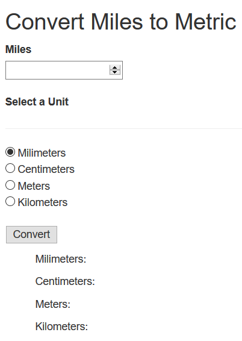

This is my fourth blog for our senior class and this one was also working with Visul Studios. This time we worked with ASP.NET MVC 5
This is my interactive ASP.NET we had to create two interactive weboages that had to use the get and post methods. We had to create a converte and a color chooser that would use hexadecimal and add them together to be able to give you another color.
This is how I got my converstions to show and I Made it look like this becuase I felt like displaying them all would be nicer than just one at a time, but even if that was not what was the assignment, I did make it show.
This is my converstions and the way I converted all of the numbers. I had to look up some how to convert, but i did check how they are calcualted and I tested them out
This is how the look turned out I made it straight then seperated, but I did make it display everyhthing I need to.
Here is one of the conversions that outcome of 50 miles to centimeters.
This is my video of testing my metric converter!